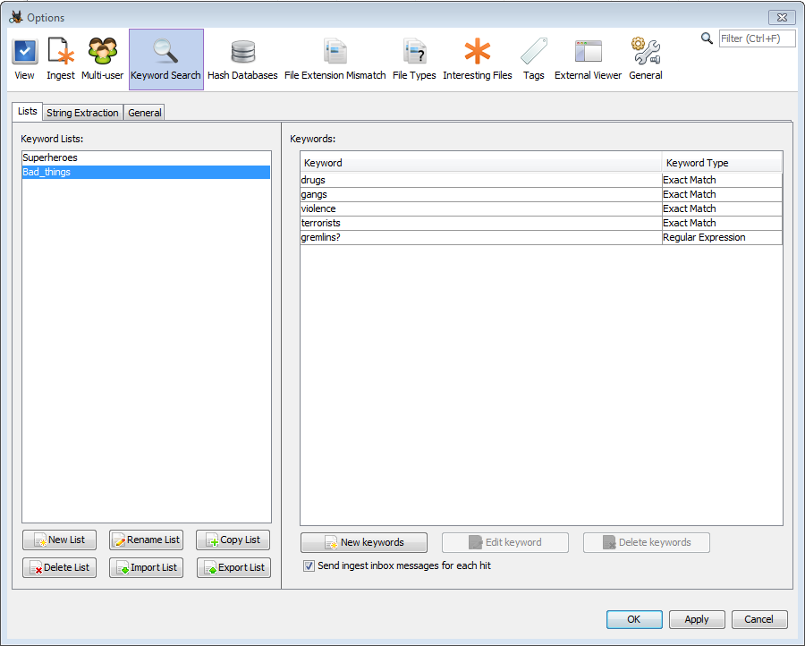
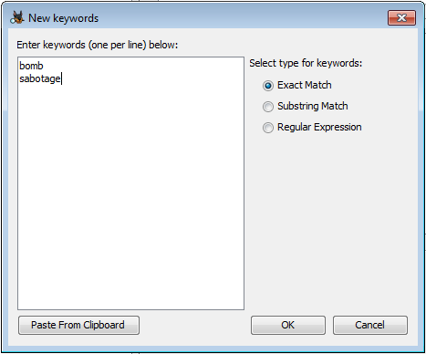
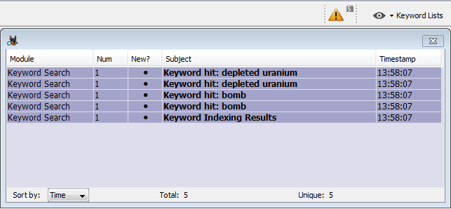
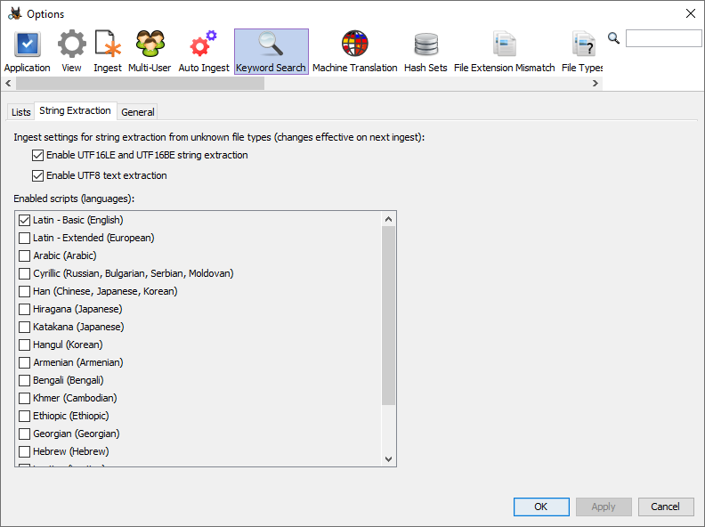
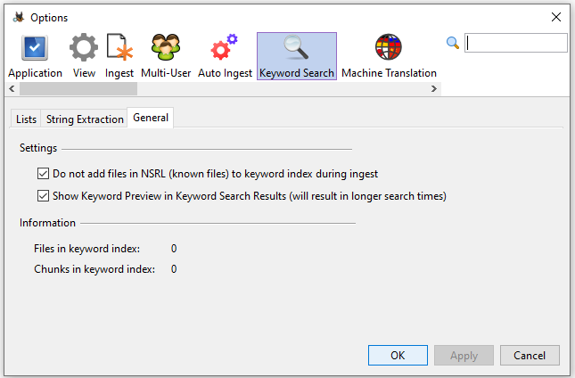
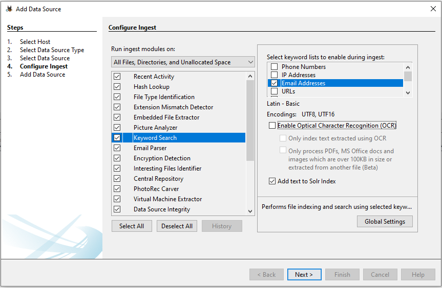
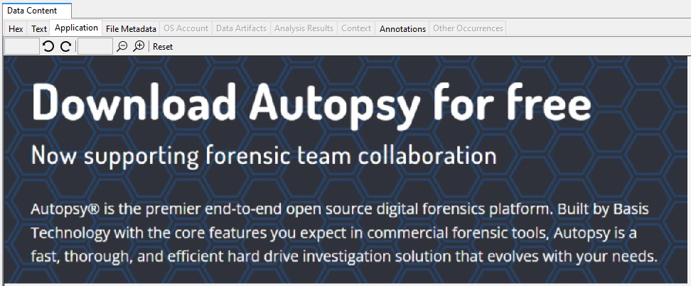
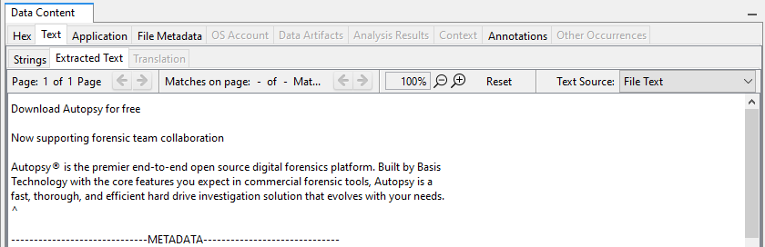
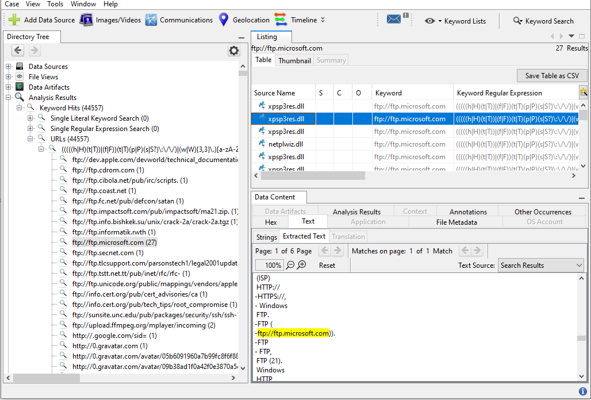

|
Autopsy User Documentation 4.22.1
Graphical digital forensics platform for The Sleuth Kit and other tools.
|
The Keyword Search module facilitates both the ingest portion of searching and also supports manual text searching after ingest has completed (see Ad Hoc Keyword Search). It extracts text from files being ingested, selected reports generated by other modules, and results generated by other modules.
Autopsy tries its best to extract the maximum amount of text from the files being indexed. First, it will try to extract text from supported file formats, such as pure text file format, MS Office Documents, PDF files, Email, and many others. If the file is not supported by the standard text extractor, Autopsy will fall back to a string extraction algorithm. String extraction on unknown file formats or arbitrary binary files can often extract a sizeable amount of text from a file, often enough to provide additional clues to reviewers. String extraction will not extract text strings from encrypted files.
Autopsy ships with some built-in lists that define regular expressions and enable the user to search for Phone Numbers, IP addresses, URLs and E-mail addresses. However, enabling some of these very general lists can produce a very large number of hits, and many of them can be false-positives. Regular expressions can potentially take a long time to complete.
Refer to Ad Hoc Keyword Search for more details on specifying regular expressions and other types of searches.
With the release of Autopsy 4.21.0, two types of keyword searching are supported: Solr search with full text indexing and the built-in Autopsy "In-Line" Keyword Search. For detailed information on configuring the search type, refer to Ingest Settings.
Full text indexing with Solr provides users with the flexibility to perform ad-hoc manual text searches after the ingest process is complete (see Ad Hoc Keyword Search). However, it's important to note that full text indexing can significantly slow down the ingest speed for large data sources and cases. Once files are indexed in the Solr index, they can be quickly searched for specific keywords, regular expressions, or a combination of both in keyword search lists.
On the other hand, the In-Line Keyword Search conducts keyword searches during the ingest process at the time of text extraction. It only indexes small sections of the files that contain keyword matches for display purposes. Our profiling runs indicate that, in most cases, this approach reduces the data source ingest time by half. This means that using the In-Line Keyword Search, a data source can be ingested in approximately half the time it takes to ingest and search the same data source using Solr indexing. However, a drawback of this method is that all search terms must be specified before the ingest begins, and there is no option to perform ad-hoc searches on the entire extracted text after the ingest process is complete.
The keyword search configuration dialog has three tabs, each with its own purpose:
The Lists tab is used to create/import and add content to keyword lists. To create a list, select the 'New List' button and choose a name for the new Keyword List. Once the list has been created, keywords can be added to it (see Creating Keywords for more information on keyword types). Lists can be added to the keyword search ingest process; searches will happen at regular intervals as content is added to the index.

The lists of keywords can be found on the left side of the panel. New lists can be created, existing lists can be renamed, copied, exported, or deleted, and lists can be imported. Autopsy supports importing Encase tab-delimited lists as well as lists created previously with Autopsy. For Encase lists, folder structure and hierarchy is ignored. There is currently no way to export lists for use with Encase, but lists can be exported to share between Autopsy users.
Once a keyword list is selected all keywords in that list will be displayed on the right side of the tab. The "New Keywords" button can be used to add one or more entries to the list, and the "Edit keyword" and "Delete keywords" buttons can alter the existing entries.

New entries can be typed into the dialog or pasted from the clipboard. All entries added at once must be the same type of match (exact, substring, or regex), but the dialog can be used multiple times to add keywords to the keyword list. Refer to the Creating Keywords section for an explanation of each keyword type.
Under the Keyword list is the option to send ingest inbox messages for each hit. If this is enabled, each keyword hit for that list will be accessible through the yellow triangle next to the Keyword Lists button. This feature gives you a quick way to view your most important keyword search results.

The string extraction setting defines how strings are extracted from files from which text cannot be extracted normally because their file formats are not supported. This is the case with arbitrary binary files (such as the page file) and chunks of unallocated space that represent deleted files. When we extract strings from binary files we need to interpret sequences of bytes as text differently, depending on the possible text encoding and script/language used. In many cases we don't know in advance what the specific encoding/language the text is encoded in. However, it helps if the investigator is looking for a specific language, because by selecting less languages the indexing performance will be improved and the number of false positives will be reduced.

The default setting is to search for English strings only, encoded as either UTF8 or UTF16. This setting has the best performance (shortest ingest time). The user can also use the String Viewer first and try different script/language settings, and see which settings give satisfactory results for the type of text relevant to the investigation. Then the same setting that works for the investigation can be applied to the keyword search ingest.

The hash lookup ingest service can be configured to use the NIST NSRL hash set of known files. The keyword search advanced configuration dialog "General" tab contains an option to skip keyword indexing and search on files that have previously marked as "known" and uninteresting files. Selecting this option can greatly reduce size of the index and improve ingest performance. In most cases, user does not need to keyword search for "known" files.
After the ingest has completed, Ad Hoc Keyword Search will be available for manual search. The amount of files/text available for Ad Hoc Search depends on the Keyword Search module settings at the time of the ingest. See section Limitations of Ad Hoc Keyword Search for details.
The Ingest Settings for the Keyword Search module allow the user to enable or disable the specific built-in search expressions, Phone Numbers, IP Addresses, Email Addresses, and URLs. Using the Advanced button (covered below), one can add custom keyword groups.
With the release of Autopsy 4.21.0, two types of keyword searching are supported: Solr search with full text indexing and the built-in Autopsy "In-Line" Keyword Search. See Ingest Settings on details regarding search type configuraiton. See sections Solr Search With Indexing and In-Line Keyword Search for details of each search type.
To select the keyword search type, you can use the "Add text to Solr Index" checkbox. When this checkbox is unchecked, Autopsy will perform the "In-Line" Keyword Search during ingest. However, most of the extracted text will not be indexed by Solr, effectively disabling the functionality described in Ad Hoc Keyword Search. On the other hand, if the checkbox is selected, Autopsy will perform the "In-Line" Keyword Search during ingest and also add all of the extracted text to the Solr index. This allows you to search the indexed text later using Ad Hoc Keyword Search.
Additionally, it's important to be aware that there might be occasional differences in the results of regular expression searches between the "In-Line" Keyword Search and Solr search. This is because the "In-Line" Keyword Search uses Java regular expressions, while Solr search employs Lucene regular expressions. You can find more details about this in Regex match.

There is also a setting to enable Optical Character Recognition (OCR). If enabled, text may be extracted from supported image types. Enabling this feature will make the keyword search module take longer to run, and the results are not perfect.
The following shows a sample image containing text:

The "Extracted Text" tab shows the results when running the keyword search module with the OCR option enabled. If we were to use Keyword Search to look for the word "forensics", this file would be a match.

The two options to related to OCR are the following:
By default, OCR is only configured for English text. Its configuration depends on the presence of language files (called "traineddata" files) that exist in a location that Autopsy can understand. To add support for more languages, you will need to download additional "traineddata" and move them to the right location. The following steps breakdown this process for you:
The language files will now be supported when OCR is enabled in the Keyword Search Settings.
The Keyword Search module will save the search results regardless whether the search is performed by the ingest process, or manually by the user. The saved results are available in the Directory Tree in the left hand side panel.
The keyword results will appear in the tree under "Keyword Hits". Each keyword search term will display the number of matches, and can be expanded to show the matches. From here, clicking on one of the matches will show a list of files on the right side of the screen. Select a file and go to the "Extracted Text" tab to see exactly where the matches occurred in the file.

Copyright © 2012-2024 Sleuth Kit Labs. Generated on Mon Apr 14 2025
This work is licensed under a
Creative Commons Attribution-Share Alike 3.0 United States License.